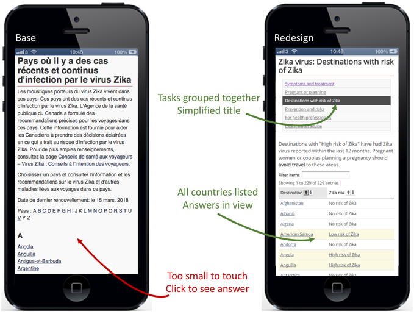

Diseases and immunization project
This is a page no one should be seeing. It needs to be translated before the EN and FR can both go live
The diseases and immunization optimization project kicked off in the Fall of 2017 to make it easier for Canadians to make informed choices about vaccination. Designers and researchers from the TBS Digital Transformation Office joined forces with Health Canada and the Public Health Agency of Canada, who pulled together a multi-disciplinary team from web communications, immunization and disease programs, and strategic marketing. This project was important to align with the National Immunization Strategy’s goal of ensuring Canadians have the information and tools needed to make evidence-based decisions on immunization.
Discovery
The discovery phase to understand the current situation: was the content on Canada.ca meeting people’s needs? What problems might they be having? We researched vaccine hesitancy and how that's been addressed around the world. We reviewed previous usability studies, analyzed website traffic patterns and search behaviours, and reviewed phone and support requests. This helped us to determine target audiences, which we then used to talk to people affected by the current content.
We also found that most people were accessing the content using mobile devices. People were checking whether they had the cold or the flu, when they needed vaccinations, or which vaccinations they would need for a specific country on their smartphones.
From these discovery insights, the team generated a set of job stories. Job stories are real-world scenarios that reflect what people are actually trying to do. They follow a structure like: When I … (the situation), I want to … (the motivation), so I can … (the expected outcome). For example:
- When it’s flu season, I want to know if/where the flu shot is available, so I can go and get it
- When I’m thinking about immunizing my child, I want to know if the vaccine is safe, so I can understand the risks
- When I return from a tropical trip, I want to know if I can be tested for Zika, so I can decide if I should delay getting pregnant

Description détaillée
[Tâche faisant l’objet d’un vote, qui est sur une feuille de papier imprimée]
C’est la saison de la grippe et une membre de la famille est enceinte. Découvrez si elle se ferait vacciner contre la grippe pendant sa grossesse.
- Commencez par le scénario F
Choisissez votre réponse ci-dessous :
- Il est dit spécifiquement qu’elle ne devrait pas se faire vacciner contre la grippe
- Il est dit spécifiquement qu’elle devrait se faire vacciner contre la grippe
- Je n’ai pas trouvé ou ne pense pas pouvoir trouver la réponse en moins de 5 minutes
[Les notes autocollantes sont placées sur la tâche imprimée]
[Note autocollante 1 : Histoire d’emploi] Quand je suis enceinte, je veux savoir quels vaccins je peux recevoir afin de protéger mon enfant et de ne pas lui faire de mal. [Il y a 10 points de vote sur cette note]
[Note autocollante 2] Difficulté avec la section sur l’immunisation, pas avec celle sur la grippe
[Note autocollante 3] Grippe
[Note autocollante 4] Immunisation
From the long list of job stories, the team voted to narrow down to the top 11 stories. We crafted these stories into task scenarios that could be used to test the website with people in our target audiences.
Establishing a baseline
Before making changes, we established a baseline score through moderated usability testing. We recruited 16 employed parents of children under 18. These participants attended research sessions in Toronto and Ottawa with their smartphones in English or French. Participants were asked to complete the 11 task scenarios on the Canada.ca website. If they had time, they repeated one task on the Ontario.ca site for comparison.
The task scenarios were presented in random order, except for the first and last tasks. Some tasks began on the home page of Canada.ca while others began on the Zika, Flu and immunization pages. The scenarios were presented on a tablet beside the participant. The participant could refer to the tablet while they attempted the task, and then return to enter in their answer and proceed to the next.
The 3 important measures for optimization studies are:
- Findability success rate: whether people found the page designed as the target for that task
- Task completion success rate: whether people successfully selected the correct answer to the task scenario
- Time on task: how long it took to complete the task (only measured if the task had at least a 75% task completion success rate)
For the baseline test, the overall findability rate was 66%, and the overall success rate was 54% across the 11 tasks and 176 task trials.
We watched videos of the testing sessions together. This helped the entire team understand the problems people had in trying to complete the tasks. We could observe and quantify behaviours and usability issues that caused task failures. We captured these observations in click paths (to understand how people moved throughout the site) and described the problems in detailed issues so we could address them during the design phase.
Redesign to improve task success
To solve the long list of issues we captured, the team created a working prototype for a new design on the Github code-sharing site. We held several workshops with smaller teams to work intensively on issues that participants experienced. For example, the Zika team realized that participants hadn’t absorbed the serious risks of pregnancy after exposure to Zika. The immunization team worked hard to integrate content to counter vaccine hesitancy. And new home page designs for Canada.ca were created to expose the links to Health and Travel that people missed in the baseline tests.
Throughout the design process, we tested content with people through small, informal “guerilla” sessions. These tests revealed problems with our designs that we were able to address before full-scale moderated usability testing.

Description détaillée
Two smartphones are shown with 2 different web pages. One is labelled "Baseline", the other "Redesign". In the "Baseline" page, the title is "Countries with recent or ongoing risk of Zika virus infection", followed by 2 long paragraphs of text that are too small to read. Following that is a list of countries beginning with "A", starting with Angola, Anguilla, Antigua and Barbuda, Argentina, and Aruba. An arrow points to the country list with an annotation "Too small to touch. Click to see answer.".
In the "Redesign" page, the title is "Zika virus: Destinations with risk of Zika". Below is a list of 6 links that are too small to read, one of which is highlighted. An arrow points to the highlighted link with the annotation "Tasks grouped together. Simplified title".
Below that is a short paragraph of text too small to read, followed by a search box and a table showing countries with "No risk of Zika", "Low risk of Zika" or "High risk of Zika" next to them. An arrow points to the countries with an annotation "All countries listed. Answers in view."
Measuring success rates on the redesigned prototype
Once the revised design was ready, 16 new participants were recruited to complete the same 11 tasks. Our target was either 80% success, or an improvement of at least 20 points over the baseline score. The revised content and design improved findability rates from 66% up to 90%. Overall task completion success rose from 54% to 84%.
This chart shows the task completion success rates across the baseline and redesigned validation test on the prototype for all 32 participants:
Datable description
| Tâche | Base | Validation |
|---|---|---|
| 1. Conseil pour se protéger contre la grippe: vaccin | 69% | 87% |
| 2. Myth du vaccin qui cause l'autisme | 13% | 80% |
| 3. Test de dépistage du Zika au retour de voyage | 75% | 100% |
| 4. Comment éviter d'attraper le Zika: pays | 69% | 100% |
| 5. Premier calendrier de vaccination pour les nouveau-nés | 50% | 75% |
| 6. Vaccin contre la grippe pendant la grossesse | 75% | 94% |
| 7. Symptômes de la grippe: maux de tête, fièvre | 50% | 94% |
| 8. Surveillance de l'influenza: cas de la semaine dernière | 94% | 88% |
| 9. Italie: Alerte médicale, rougeole | 50% | 69% |
| 10. Vaccins pour les voyages au Mexique | 13% | 69% |
| 11. Grippe H3N2 dans le vaccin de cette année | 31% | 73% |
32 participants total
Key drivers of success
The team derived this set of 6 design principles that appeared to have the most impact on improving success rates:
- Learn from users: take the time to understand their needs and expectations, and use data to understand the questions they have
- Create answers, not information: craft clear, simple answers for questions people have
- Design for mobile first: less prose, more space and interaction
- Reduce layers: Group tasks and sub-tasks together to improve findability
- Use calls to action: Design content flow from specific to general
- Lose the paper mentality: bring content onto web pages and out of PDFs and posters
Request the research
Let us know what you think about this project. Email us at information@tbs-sct.gc.ca or tweet using the hashtag #Canadadotca.
What do you think?
Let us know what you think about this project. Tweet using the hashtag #Canadadotca.Explore further
- See the new Immunization page, based on the new designs in this project
- Countering vaccine hesitancy is an academic article on overcoming concerns about getting immunized
- Read overviews of other projects with our partners